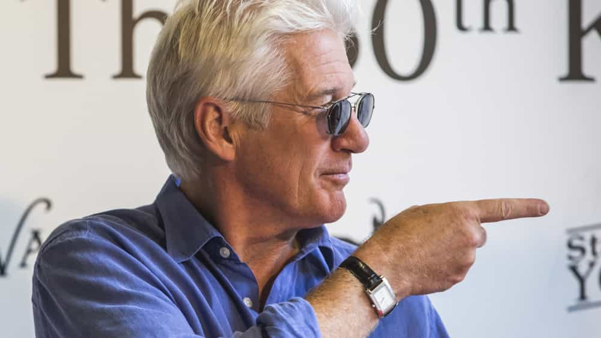

Countless leftist universities, professors, lecturers, and students have attacked President Donald Trump for being a “dictator” purportedly endangering people or inflicting actual “harm” on them. Trump, an elected head of state, hilariously stands accused of subverting American democracy. Meanwhile, these same academic institutions and individuals are completely silent about the behavior of the Chinese government, mostly because American universities desire the money of cashed-up Chinese international students.
The supreme irony of the university-based hatred towards Trump is that he doesn’t try to physically remove or intimidate those who despise and badmouth him. In China, such excoriation of the central government by academics or students would almost certainly result in the sacking, expulsion, arrest, and imprisonment of the detractors. This is all lost on Trump’s opponents, including everyone from the “Trump is awful” folks through to the “Trump is Hitler” delusionals.
The effects of the American universities’ reluctance to discuss China in a similar fashion to Donald Trump are palpable and include:
- an increasing unwillingness of universities especially but also individual activists within them to raise the issue of proposed Tibetan independence from China, all whilst raising American/Trump’s “imperialism”;
- a refusal to compare vilified Russia, which has a democracy, with China, which does not have a democracy outside the weak Communist Party one;
- attacks on Trump’s rather tame disliking of the mainstream media, with colleges forgetting that many of its international students come from countries with no independent media at all; and
- an abandonment of fellow academics in China, many of whom lose their jobs or are jailed for speaking out against Chinese government policies.
China is doing what it wants on American campuses because academics need international student money
Politicians in Beijing are masters at advocating for China abroad and they often do so by vigorously eliminating “critical discussion of China’s government,” an outcome achieved through soft, frequently financial-based maneuvering. This is key to understanding universities’ lopsided attacks on Donald Trump. In recent times, American university campuses obsessed with him have been continually outfoxed by extremely sophisticated and intelligent Chinese officials who push Beijing’s talking points under the guise of “spreading Chinese culture.”
A central tenet of international “China first” cultural operations is the promotion of Confucius Institute chapters on Western university campuses. This group is openly subordinate to the central government in Beijing and its Ministry of Education. A number of concerned institutions, most prominently the University of Chicago and the University of Lyon in France, “discontinued” their contracts with the Confucius Institute, amounting to an unofficial ban of the organization.
More ominously, Foreign Policy describes the Confucius Institute and comparable Chinese government initiatives as a “Trojan horse” undermining both free speech and academic freedom. The large-scale control Beijing wields in the remaining Confucius Institute chapters mean that students and academics alike face huge barriers as to what they can and cannot discuss related to China. Coupled with the financial power China holds over money-hungry American universities, these expensive propaganda efforts are stifling open debate on campuses.
All in all, one needs to applaud the tenacity of the Chinese government in furthering its national priorities–China’s international standing, power, and prestige. The problem is that the pursuit of such goals is worsening a US political environment in which Donald Trump is more maligned than the most powerful dictatorship in the world.
The rot in US universities rolls on
Harvard’s Danielle Allen is one of many academics to associate Trump with Adolf Hitler. This beggars belief, not least because Adolf Hitler would never have let a black woman hold a position at a university.
American universities typically employ hyperbole to equate Donald Trump with authoritarianism, or they wilfully ignore the authoritarian nature of other countries to make Trump look like one of the world’s few alleged dictators (or the only one). For instance, two Harvard academics, Steven Levitsky and Daniel Ziblatt, insist that our Donald is “ticking boxes” when it comes to being an authoritarian leader in their book How Democracies Die. In addition, Timothy Snyder from Yale has used a sleight of hand trick to pillory the American President, claiming that he and Hitler are indeed different but should still be compared to one another.
Let’s not restrict ourselves only to the words “authoritarian” or “Hitler.” We should also include “fascist,” “racist,” and other sorts of descriptions used to try and denigrate Trump. In these “academic” debates (and they’re really just anti-Trump diatribes much of the time), precious little objectivity or fairness exists. Mere words uttered by Trump are treated with more anger by US academics than the imprisonment of political opponents in places like China. After all, he must be a pretty bad authoritarian or outright dictator if he isn’t jailing the thousands of American journalists who criticize him on a daily basis!
China is playing its hand brilliantly
Colleges from Massachusetts to California are terrified of applying the same critical standards they use against Trump to regimes like China’s. They depend too much on the tuition fees paid by students from these countries, which explains why they sacrifice their “principles.”
China’s transformation over the last two decades even has been truly amazing and there is no doubt in my mind that a liberal democracy could not achieve the sort of material progress engineered by the Chinese government. The authorities in Beijing are absolute experts at putting the strategic interests of their country first. Nevertheless, China’s Communist Party embodies all the criticisms leftists in the United States throw at Donald Trump, not that American universities seem to care.
Of course, Americans are going to be more enthusiastic in calling out their own leaders. Yet the institutions that incessantly deride Trump should apply the same standards to real non-democracies abroad. But why don’t they? Well, in a choice between consistent application of political “principles” and the cash cow of Chinese students, the universities have decisively chosen the cash cow.
Though I myself do not support, for example, Tibetan independence, I see the hypocrisy of leftist academics on this matter. They prattle on about historical “invasions” or “imperialism” by the US or other Western states like Britain or Australia, leaving out Tibet and China, a much more recent situation.
That said, the Chinese government would simply withdraw many of its international students if American colleges grew a spine and spoke out both consistently and proportionally on topics like democracy, a free press, and contentious ethnic debates. And deans and professors around the country will just not have that; it would cost them hundreds of millions of dollars every year.
This isn’t just happening on campuses in the United States–it’s in Hollywood, too

Richard Gere paid the price for disagreeing with the Chinese government.
Ever noticed that Richard Gere is basically gone from our screens, other than when old films like Pretty Woman play on television? His long-term support for Tibetan independence and the ire it drew from the Chinese government cost him his ongoing fame–and income. He has been unofficially blacklisted and now serves as a warning to others.
Unsurprisingly, Hollywood, once a home for films like Seven Years in Tibet (which got Brad Pitt banned from China for a long time), learned several years ago to kowtow to Beijing’s political sensitivities. Just as American universities are quiet about Chinese political issues to curry favor and receive international student money, Tinseltown will selectively sacrifice its erstwhile liberal political program to reel in the mega-dollars from Chinese theaters. Donald Trump, however, remains the new Hitler for actors and other celebrities.
Leftist centers of power, whether in Los Angeles or your local college town, can perpetually rail against imaginary racism, imperialism, and abuse supposedly created by Trump. Simultaneously, they regularly act obsequiously towards the same people–true authoritarian leaders most of all–that they say they oppose. How fitting.
Read More: LaVar Ball Is Ungrateful That Donald Trump Got His Son Out Of A Chinese Jail